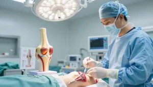

Trajanje rehabilitacije nakon rekonstrukcije ACL ligamenata
Nakon ozljede prednjeg križnog ligamenta, rekonstrukcija ACL-a je kirurški zahvat čiji je cilj obnoviti stabilnost koljena.
Proces rehabilitacije ključan je za uspješan oporavak i vraćanje pune funkcije koljena. U ovom članku istražujemo koliko traje rehabilitacija nakon ACL rekonstrukcije.
Dat ćemo vam uvid u trajanje oporavka, preporuke za uspješnu rehabilitaciju te objasniti zašto su Kinetek vježbe ključne.
Ključni zaključci
- Rehabilitacija nakon ACL rekonstrukcije zahtijeva strpljenje i posvećenost.
- Trajanje oporavka varira ovisno o individualnim čimbenicima.
- Kinetek vježbe ključne su za uspješnu rehabilitaciju.
- Redoviti pregledi kod specijalista su neophodni.
- Prevencija budućih ozljeda važan je dio rehabilitacije.
Što je ACL rekonstrukcija i zašto je potrebna rehabilitacija
Rekonstrukcija ACL ligamenata je operacija koja pomaže koljenu nakon ozljede. Prednji križni ligament (ACL) ključan je za stabilnost koljena i omogućuje pravilno kretanje.
Anatomija ACL ligamenta i njegove funkcije
ACL se nalazi u središtu koljena i povezuje bedrenu i goljeničnu kost. Stabilizira koljeno i sprječava prekomjerno pomicanje.
Uloga ACL-a u stabilnosti koljena
ACL čuva koljeno stabilnim, posebno pri skakanju i brzim pokretima. Ozljede ACL-a mogu uzrokovati nestabilnost i povećati rizik od osteoartritisa.
Povezanost s drugim strukturama koljena
ACL je povezan s meniskusima i drugim ligamentima, a ozljede meniskusa često zahtijevaju zasebnu operaciju meniskusa i pravilnu rehabilitaciju. Ova povezanost bitna je za pravilno funkcioniranje koljena.
Najčešći uzroci ozljede ACL-a
Ozljede ACL-a česte su među sportašima. Najčešći uzroci su naglo zaustavljanje, skakanje i nagle promjene smjera.
Važnost stručne rehabilitacije nakon operacije
Rehabilitacija je ključna za oporavak koljena. Stručni tretman uključuje vježbe i fizikalnu terapiju.
ACL rekonstrukcija i rehabilitacija neodvojivi su dijelovi oporavka. Pravilna njega i terapija omogućuju potpun oporavak.
Cjelokupni pregled trajanja oporavka nakon ACL rekonstrukcije
Oporavak nakon ACL rekonstrukcije zahtijeva strpljenje i posvećenost. Razumijevanje trajanja i čimbenika koji utječu na oporavak pomaže pacijentima da se bolje pripreme za rehabilitaciju.
Prosječno vrijeme oporavka, što očekivati
Prosječno vrijeme oporavka nakon ACL rekonstrukcije varira. Većina pacijenata može se vratiti svakodnevnim aktivnostima unutar 6 do 9 mjeseci. Pravilan pristup rehabilitaciji značajno utječe na brzinu i kvalitetu oporavka.
Važno je napomenuti da je ovo samo prosjek i da svaki oporavak može biti drugačiji.
Čimbenici koji utječu na brzinu oporavka
Nekoliko čimbenika može utjecati na brzinu oporavka nakon ACL rekonstrukcije. To uključuje dob i fizičku spremnost prije ozljede te vrstu presatka koji je korišten.
Dob i fizička sprema prije ozljede
Dob i fizička kondicija prije ozljede ključni su čimbenici. Mlađi i fizički spremniji pacijenti obično se brže oporavljaju.
Vrsta presatka korištenog pri rekonstrukciji
Vrsta presatka korištenog pri ACL rekonstrukciji također utječe na oporavak. Različiti presatci imaju različita svojstva koja utječu na brzinu integracije i stabilnost koljena.
Individualne razlike u procesu rehabilitacije
Svaki pacijent je jedinstven, pa i rehabilitacija može biti drugačija. Individualne razlike u anatomiji, fiziologiji i psihološkom stanju utječu na ishod.
Ukratko, oporavak nakon ACL rekonstrukcije individualan je proces. Razumijevanje utjecaja različitih čimbenika može pomoći u postizanju boljih ishoda.
Prva faza rehabilitacije: 1-2 tjedna nakon operacije
Nakon operacije ACL ligamenata počinjemo s prvom fazom rehabilitacije. Ova faza traje oko 1 do 2 tjedna i ima nekoliko važnih ciljeva.
Kontrola boli i otekline
Kontrola boli i otekline prvi je korak. Postiže se kombinacijom različitih metoda.
Primjena leda i elevacija
Led smanjuje oteklinu i bol. Treba ga staviti na koljeno 15 do 20 minuta, nekoliko puta dnevno. Elevacija noge također pomaže.
Farmakološka kontrola boli
Uz led i elevaciju koristimo i lijekove za bol. Važno je slijediti upute liječnika.
Početne vježbe za mobilnost
Početne vježbe su ključne. Održavaju pokretljivost i sprječavaju atrofiju mišića. Uključuju lagane pokrete koljena i istezanje.
Ciljevi koje treba postići prije prelaska u sljedeću fazu
Prije prelaska u sljedeću fazu potrebno je postići određene ciljeve: smanjiti bol i oteklinu te postići zadovoljavajući opseg pokreta.
Druga faza rehabilitacije: 2-6 tjedana nakon operacije
U drugoj fazi rehabilitacije, koja traje od 2 do 6 tjedana, fokus je na jačanju mišića oko koljena. Ova faza ključna je za oporavak i vraćanje funkcionalnosti koljena.
Povećanje opsega pokreta
Pacijenti počinju s vježbama za povećanje opsega pokreta. Ove vježbe pomažu u vraćanju normalne pokretljivosti koljena.
- Vježbe istezanja za poboljšanje fleksibilnosti
- Mobilizacija patele za smanjenje ukočenosti
Jačanje mišića i stabilizacija koljena
Jačanje mišića oko koljena ključno je za stabilnost i sprječavanje ozljeda. U ovoj fazi pacijenti počinju s različitim vježbama.
Izometrične vježbe za kvadriceps
Izometrične vježbe za kvadriceps pomažu u jačanju mišića bez pokretanja zgloba. Ove vježbe posebno su korisne u ranoj fazi.
Vježbe za stražnju ložu i gluteuse
Vježbe za stražnju ložu i gluteuse poboljšavaju stabilnost koljena i funkcionalnost noge.
Vježbe zatvorenog kinetičkog lanca
Vježbe zatvorenog kinetičkog lanca, kao što su čučnjevi, pomažu u jačanju mišića i poboljšanju funkcionalnosti koljena.
Postupno povećanje opterećenja
Kako pacijenti napreduju, važno je postupno povećavati opterećenje na koljeno. To pomaže u daljnjem jačanju mišića i pripremi za svakodnevne aktivnosti.
Treća faza rehabilitacije: 6-12 tjedana nakon operacije
U ovoj fazi, od 6 do 12 tjedana, naglasak je na jačanju mišića. Pacijenti počinju s funkcionalnim aktivnostima koje im pomažu da se vrate uobičajenom ritmu života.
Napredne vježbe snage
Napredne vježbe snage ključne su u ovoj fazi. Uključuju:
Vježbe otvorenog kinetičkog lanca
Vježbe otvorenog kinetičkog lanca, kao što su ekstenzije nogu, jačaju kvadriceps bez opterećenja zgloba.
Progresija opterećenja
Postupno povećavanje opterećenja jača mišiće i poboljšava funkcionalne sposobnosti.
Vježbe s otporom
Vježbe s otporom, poput čučnjeva, jačaju mišiće i poboljšavaju stabilnost koljena.
Uvođenje funkcionalnih aktivnosti
Pacijenti počinju s funkcionalnim aktivnostima. To uključuje hodanje, penjanje stepenicama i lagano trčanje. Ove aktivnosti poboljšavaju koordinaciju i ravnotežu.
Priprema za povratak svakodnevnim aktivnostima
Cilj je pripremiti pacijente za povratak svakodnevnim aktivnostima. To uključuje jačanje mišića, poboljšanje fleksibilnosti i koordinacije.
Četvrta faza rehabilitacije: 3-6 mjeseci nakon operacije
Nakon tri do šest mjeseci od operacije započinje četvrta faza rehabilitacije. Tada je fokus na pripremi za povratak sportu. Pacijenti su već napredovali u oporavku i sada se bave specifičnim vježbama.
Sportski specifične vježbe
Sportske vježbe ključne su u ovoj fazi. One simuliraju pokrete i zahtjeve specifičnog sporta. Na primjer, nogometač će raditi na brzim promjenama smjera.
Trening agilnosti i ravnoteže
Trening agilnosti i ravnoteže je važan. Agilnost omogućuje brze promjene smjera i brzine, dok ravnoteža pomaže u održavanju stabilnosti tijela.
Vježbe promjene smjera
Vježbe promjene smjera korisne su za sportove koji zahtijevaju brzinu. Uključuju postavljanje konusa i izvođenje brzih promjena smjera.
Pliometrijski trening
Pliometrijski trening pomaže u poboljšanju snage i brzine. Uključuje skakanje i dubinske skokove.
Psihološka priprema za povratak sportu
Psihološka priprema jednako je važna kao i fizička. Pacijenti moraju biti mentalno spremni za povratak sportu. To uključuje izgradnju samopouzdanja i upravljanje stresom.
Četvrta faza rehabilitacije zahtijeva strpljenje i pravilan pristup. Slijedeći smjernice, pacijenti se mogu uspješno vratiti svojim sportskim aktivnostima.
ACL rekonstrukcija trajanje oporavka Kinetek - naš pristup rehabilitaciji
Kinetekov pristup rehabilitaciji nakon ACL rekonstrukcije koristi najnovije metode. Naš tim stvara individualne programe za svakog pacijenta, čime osiguravamo najbolji mogući oporavak.
Specifičnosti Kinetek metode rehabilitacije
Kinetekova metoda kombinira najnovije tehnologije i znanje. Naš pristup uključuje inovativne tehnike i znanstveno utemeljene protokole.
Inovativne tehnike i oprema
Koristimo najnoviju opremu za rehabilitaciju, uključujući Kinetek uređaje za oporavak koljena i softver za analizu pokreta. Ove tehnologije pomažu u preciznoj dijagnostici i učinkovitoj rehabilitaciji.
Znanstveno utemeljeni protokoli
Naši protokoli temelje se na najnovijim istraživanjima, čime osiguravamo da naši pacijenti dobiju najbolju moguću skrb.
Stručni tim i individualizirani programi
Naš tim sastoji se od iskusnih stručnjaka koji kreiraju personalizirane programe za svakog pacijenta. Time osiguravamo da svaki pacijent dobije potrebnu skrb i podršku.
Prednosti Kinetek pristupa u usporedbi s tradicionalnim metodama
Kinetekov pristup rehabilitaciji nudi brojne prednosti. Naš cjeloviti pristup, koji uključuje inovativne tehnike i znanstveno utemeljene protokole, rezultira bržim i učinkovitijim oporavkom.
Kinetekova metoda rehabilitacije nakon ACL rekonstrukcije predstavlja vrhunski pristup oporavku. Kombinira inovativne tehnike, znanstveno utemeljene protokole i stručni tim za optimalne rezultate.
Ključne vježbe za uspješnu rehabilitaciju ACL-a
Za uspješnu rehabilitaciju ACL-a potrebno je pažljivo planirati vježbe. One su osmišljene kako bi pomogle u obnovi funkcije koljena i poboljšale stabilnost.
Vježbe za povećanje opsega pokreta
Vježbe za povećanje opsega pokreta ključne su u ranoj fazi rehabilitacije. Smanjuju ukočenost i povećavaju fleksibilnost koljena, a više o tome pročitajte u članku o najboljim metodama povećanja pokretljivosti koljena.
- Pokreti koljena u svim smjerovima
- Ekstenzija i fleksija koljena
Vježbe za jačanje kvadricepsa i stražnje lože
Jačanje kvadricepsa i stražnje lože bitno je za stabilnost koljena. Postoje različiti načini izvođenja ovih vježbi.
Vježbe s vlastitom težinom
Čučnjevi i iskoraci pomažu u jačanju mišića bez prekomjernog opterećenja zglobova.
Vježbe s elastičnim trakama
Elastične trake pružaju otpor koji pomaže u jačanju mišića oko koljena.
Vježbe s utezima i na spravama
Korištenje utega i sprava omogućuje progresivno opterećenje mišića. To je ključno za potpunu obnovu snage.
Vježbe propriocepcije i ravnoteže
Vježbe propriocepcije i ravnoteže poboljšavaju stabilnost i sprječavaju ponovne ozljede. Primjeri uključuju stajanje na jednoj nozi i korištenje balans daske.
Uključivanje ovih vježbi u program rehabilitacije pomaže u postizanju najboljih rezultata i omogućuje brži povratak svakodnevnim aktivnostima.
Uloga fizikalne terapije u oporavku nakon ACL rekonstrukcije
Fizikalna terapija ima ključnu ulogu u oporavku nakon ACL rekonstrukcije. Koristi različite metode koje pomažu bržem i sigurnijem oporavku.
Manualne tehnike i mobilizacija
Manualne tehnike i mobilizacija bitan su dio fizikalne terapije. Smanjuju bol i poboljšavaju funkciju koljena. Uključuju masažu, istezanje i mobilizaciju zglobova.
Elektroterapija i drugi modaliteti
U elektroterapiji koriste se TENS, elektrostimulacija mišića, ultrazvuk i laser. Ublažavaju bol i potiču oporavak tkiva.
TENS i elektrostimulacija mišića
TENS i elektrostimulacija mišića koriste se za kontrolu boli i jačanje mišića. Posebno su korisni u ranim fazama rehabilitacije.
Ultrazvuk i laser
Ultrazvuk i laser terapija potiču regeneraciju tkiva i smanjuju upalu. Neinvazivne su i učinkovite u podržavanju rehabilitacije.
Važnost redovitih kontrola i praćenja napretka
Redovite kontrole i praćenje napretka ključni su za uspješnu rehabilitaciju. Fizikalni terapeut prilagođava program prema potrebama pacijenta, osiguravajući optimalan oporavak.
Fizikalna terapija, kroz različite metode i redovite kontrole, ima ključnu ulogu u oporavku nakon ACL rekonstrukcije. Naš pristup rehabilitaciji nakon operacije koljena u Hrvatskoj pomaže pacijentima da se brže i sigurnije oporave te vrate svojim aktivnostima.
Povratak sportskim aktivnostima, kada i kako
Prije povratka sportu potrebno je ispuniti nekoliko kriterija. Povratak sportskim aktivnostima nakon ozljede koljena zahtijeva pažnju i stručno vođenje.
Kriteriji za siguran povratak sportu
Prije vraćanja punom intenzitetu potrebno je proći nekoliko testova. Ti testovi ključni su za sigurnost.
Funkcionalni testovi
Funkcionalni testovi provjeravaju otpornost koljena. Uključuju hop testove i testove agilnosti.
Snaga i simetrija mišića
Snaga i simetrija mišića izuzetno su važne. Potrebno je raditi ciljane vježbe kako bi se postigla odgovarajuća razina.
Psihološka spremnost
Psihološka spremnost jednako je važna kao i fizička. Potrebno je biti mentalno pripremljen za povratak.
Postupno povećanje intenziteta treninga
Nakon ispunjenja kriterija, intenzitet treninga treba postupno povećavati. To znači:
- Početak s manjim intenzitetom
- Postupno povećavanje opterećenja
- Redovito praćenje napretka
Savjeti za sprječavanje ponovne ozljede
Za sprječavanje ponovne ozljede važno je:
- Nositi zaštitnu opremu
- Redovito vježbati
- Pratiti pravilnu tehniku
Česte komplikacije i kako ih izbjeći tijekom rehabilitacije
Komplikacije tijekom rehabilitacije mogu biti izazov, ali ih pravilan pristup može spriječiti. Važno je razumjeti i rano prepoznati potencijalne komplikacije.
Artrofibroza i ograničena pokretljivost
Artrofibroza može ograničiti pokretljivost zbog stvaranja ožiljaka u zglobu. Rana mobilizacija i specifične vježbe mogu spriječiti ovu komplikaciju.
Slabost mišića i nestabilnost koljena
Slabost mišića oko koljena može dovesti do nestabilnosti. To može utjecati na funkcionalnost i povećati rizik od ponovne ozljede. Redovite vježbe za jačanje mišića ključne su za prevenciju.
Prerana aktivnost i rizik od ponovne ozljede
Prerana aktivnost i prekomjerno opterećenje povećavaju rizik od ponovne ozljede. Važno je postupno povećavati intenzitet aktivnosti i osluškivati tjelesne signale.
Znakovi preopterećenja
Znakovi preopterećenja uključuju pojačanu bol, oticanje i smanjenu funkcionalnost. Prepoznavanje ovih znakova može spriječiti daljnje komplikacije.
Kada usporiti s rehabilitacijom
Ako se pojave znakovi preopterećenja, važno je usporiti s rehabilitacijom. Konzultacija s rehabilitacijskim timom može pomoći u prilagodbi plana.
Komunikacija s rehabilitacijskim timom
Redovita komunikacija s timom je ključna. Pacijenti trebaju izvještavati o svim promjenama ili poteškoćama tijekom oporavka.
Dugoročni rezultati i kvaliteta života nakon ACL rekonstrukcije
ACL rekonstrukcija ne samo da popravlja funkciju koljena, već značajno poboljšava kvalitetu života na dugi rok. Nakon uspješne rehabilitacije pacijenti mogu očekivati dobru kvalitetu života i povratak sportu.
Očekivani ishodi nakon potpune rehabilitacije
Nakon potpune rehabilitacije pacijenti obično imaju bolju funkciju koljena. To uključuje povratak sportskim i svakodnevnim aktivnostima bez ograničenja.
Očekivani ishodi uključuju bolju stabilnost koljena, manju bol i veći opseg pokreta. Važno je da pacijenti nastave s redovitim vježbama kako bi održali postignute rezultate.
Prevencija osteoartritisa i drugih dugoročnih komplikacija
Jedan od ključnih ciljeva dugoročne rehabilitacije je prevencija osteoartritisa i drugih komplikacija. Redovite vježbe i održavanje zdrave tjelesne težine mogu smanjiti rizik od osteoartritisa.
Važno je pratiti stanje koljena i pravodobno reagirati na eventualne promjene ili simptome koji bi mogli ukazivati na početak komplikacija.
Održavanje snage i stabilnosti koljena dugoročno
Održavanje snage i stabilnosti koljena ključno je za dugoročne rezultate ACL rekonstrukcije. To se postiže redovitim vježbama koje otklanjaju slabosti i poboljšavaju propriocepciju.
Program vježbi za dugoročno održavanje
Program vježbi treba uključivati vježbe za jačanje kvadricepsa i stražnje lože, kao i vježbe propriocepcije. Primjerice, čučnjevi, iskoraci i ravnotežne vježbe vrlo su učinkoviti.
Prilagodba sportskih aktivnosti
Pacijenti koji se vraćaju sportskim aktivnostima trebaju prilagoditi svoje treninge. To uključuje postupno povećanje intenziteta i praćenje reakcije koljena na opterećenje.
Zaključak
Rehabilitacija nakon ACL rekonstrukcije složen je proces koji zahtijeva strpljenje, posvećenost i stručan pristup. Slijedeći rehabilitacijski program, pacijenti mogu postići izvrsne rezultate.
Naš tim stručnjaka naglašava važnost individualnog pristupa. Svaki korak u rehabilitaciji, od kontrole boli do naprednih vježbi, ključan je za uspješan oporavak.
ACL rekonstrukcija i rehabilitacija neodvojivo su povezane. Pravilan program i podrška stručnjaka omogućuju povratak funkcionalnosti koljena i smanjuju rizik dugoročnih komplikacija.
Uspješna rehabilitacija nakon ACL rekonstrukcije znači više od samog proteka vremena. Kvalitetan i stručan pristup donosi najbolje rezultate te osigurava dugoročnu stabilnost i funkcionalnost koljena.